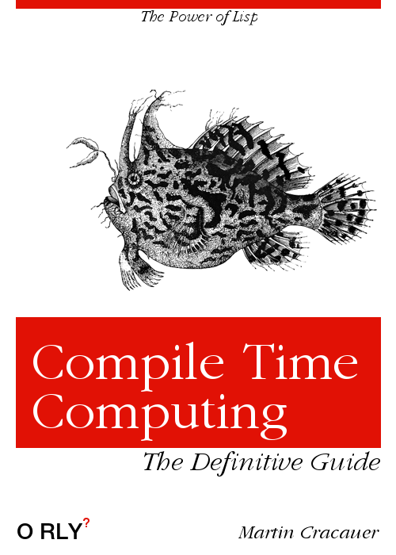

Постоянно ведутся споры о том, следует ли включать единицы измерения в имена переменных и полей, такие как «длина в метрах»(length-in-meters). .
Мы можем сделать лучше, намного лучше. Нам нужен метод, в котором для чисел, поступающих из исходного кода (литералов) и из файлов или потоков, объявляется их единица измерения, и система преобразует их тогда и только тогда, когда это необходимо.
Итак, чего мы *не* делаем, так это тащить за собой единицу измерения(unit) во время выполнения как в вот такой структуре:
struct double-ish {
double number;
enum unit;
}
>⦠а затем проверять и, при необходимости, конвертировать единицу измерения (unit) при каждой операции во время выполнения.
И мы хотим *постепенного* развития. Мы хотим что-то полезное *сегодня*, без необходимости реализовывать подсистему ниндзя, прежде чем мы сможем написать наш производственный код.
В качестве справочной информации вы можете обратиться к первым двум частям моей серии о вычислениях во время компиляции:
https://medium.com/@MartinCracauer/a-gentle-introduction-to-compile-time-computing-part-1-d4d96099cea0
https://medium.com/@MartinCracauer/a-gentle-introduction-to-compile-time-computing-part-2-cb0a46f6cfe8
Первый порядок работы для научных единиц измерения(units):
напишите достаточно кода, чтобы, вводя литералы в исходный код, вы могли записать единицу измерения(unit) уже *сегодня*, хотя у вас нет времени делать что-то умное сегодня с этой единицей измерения. Но каждый раз, когда вы пишете что-то в исходном коде, вы хотите *сегодня* поставить единицу измерения. Так что позже вы можете сделать что-нибудь умное с *механизмом* обработки единиц измерения без необходимости редактировать *все* ранее введенные вами числа.
(defconstant +c+ (unit 299792458 m/s)) (defconstant +h+ (unit 6.62607015e-34 Js)) (defconstant +e+ (unit 2.7182882845 :none))(defconstant +up-quark-mass+ (unit 2.3 MeV/c^2 +0.7 -0.5)) [...]
Похоже, это хороший способ записывать *сегодня*. Когда я ищу все это в Википедии, я также записываю дополнительные метаданные, в данном случае variance(дисперсию). Опять же, дело не в том, что сегодня я могу что-то сделать с дисперсией. Но данные прямо там, и я хочу ввести их *сегодня*.
Итак, чтобы начать работу сегодня, мы делаем простейшую реализацию, которая позволяет нам делать то, что описано выше:
(defmacro unit (value unit &rest more) (declare (ignore unit more)) value)
Этот макрос делает следующее::
требует, чтобы unit(единица измерения) была дана
готовится к поступлению дополнительных метаданных, с которыми мы кое-что сделаем в будущей версии макроса. Прямо сейчас мы просто принимаем больше аргументов и отбрасываем их
Этот макрос заставляет работать указанные выше defconstants. Мы можем начать вводить все числа с единиц измерения(units) уже сегодня..
Прежде чем продолжить, позвольте мне указать вам на файл исполняемого кода: https://www.cons.org/cracauer/ccunits.lisp
Трудно поддерживать актуальность в среднем документе с помощью копирования и вставки. Пожалуйста, обратитесь к этому Lisp-файлу, чтобы увидеть, как работают примеры.
Следующий шаг в простоте - просто заставить все быть единицами измерения СИ:
(defmacro unit (value unit &rest more)
(declare (ignore more))
(case unit
(m/s)
(Js)
(:none)
(t (error "unknown unit ~a" unit)))
value)
Убедитесь, что вы понимаете, что это выполняется во время компиляции. Вы можете использовать его для определения этих *констант*, и они будут литеральными константами для компилятора. Мы выполняем описанную выше обработку во время компиляции, что означает, что это происходит до того, как компилятор скомпилирует ассемблерный код для любых функций, использующих эти константы. Ничего во время выполнения. Во время выполнения у вас просто номер. Вы просто отклоняете единицы, которых не знаете.
Написание этого кода заняло у меня менее 20 секунд. Учитывая время выполнения Lisp, я могу протестировать этот код, скомпилировав как макрос, так и объявления констант менее чем за 1 секунду.
Хорошо, так что эти константы съедаются:
(defconstant +c+ (unit 299792458 m/s)) (defconstant +h+ (unit 6.62607015e-34 Js)) (defconstant +e+ (unit 2.7182882845 :none))
Но ему не нравится это, которое не совсем СИ. :
(defconstant +up-quark-mass+ (unit 2.3 MeV/c^2 +0.7 -0.5))
Сообщение об ошибке очень четкое и появляется во время *компиляции*:
unknown unit MEV/C^2 [Condition of type SIMPLE-ERROR]
Так что же нам делать? Мы просто добавляем в макрос MEV/C^2? Нет, мы решили (на данный момент), что наша система внутренне работает с единицами СИ, так что пора также научить эту штуку конвертировать. Мы также изменили способ возврата значения, чтобы он был немного более функциональным:
(defmacro unit (value unit &rest more)
(declare (ignore more))
(case unit
(m/s value)
(Js value)
(:none value)
(MeV/c^2 (* value 1.78266191e-30))
(t (error "unknown unit ~a" unit))))
Это заставляет его обрабатывать константу массы кварка. Результат выглядит правильным:
Yes, Master? CL-USER> +up-quark-mass+ 4.100122e-30
Опять же, это происходит во время компиляции. Давай проверим. Убедимся, что в скомпилированном коде нет следов проверки единиц измерения:
(defun testfun ()
(+ +up-quark-mass+ +c+))
;; скомпилируем в SBCL, затем дизассеблируем:Yes, Master? CL-USER> (disassemble 'testfun)
; disassembly for TESTFUN
; Size: 13 bytes. Origin: #x52E3B9B6
; B6: 488B15B3FFFFFF MOV RDX, [RIP-77] ; no-arg-parsing entry point
; 2.9979245e8
; BD: 488BE5 MOV RSP, RBP
; C0: F8 CLC
; C1: 5D POP RBP
; C2: C3 RET
NIL
Yes, Master? CL-USER>
О, смотри. Он не только оставил числа во время выполнения, но и компилятор даже распознал, что над константами есть арифметические операции, и свернул их(выполнил и подставил результат) во время компиляции. Это называется сворачиванием констант. Сворачивание констант обычно доступно в C ++ и его друзьях. Проблема в том, что вам нужен хороший способ, в первую очередь, придумать все константы, не вводя одни и те же данные повторно, а вводя их с проверкой единиц измерения(unit checking).
Как долго я писал этот код? Ну, самым большим шагом было ввести единицы измерения в Google, чтобы узнать, что такое константа преобразования. К счастью, поисковая система Google достаточно сложна, чтобы знать о таких экзотических единицах, как MeV/c². Итого меньше минуты. Для тестирования моего нового кода потребовалось его скомпилировать и запустить. Благодаря обычному процессу обработки Lisp, который занял менее секунды. Подробнее см. Здесь: https://hackernoon.com/software-development-at-1-hz-5530bb58fc0e
Хорошо, так что это полезно. Вы можете просто добавить новые единицы, которые вам нужны, в макрос, когда новые появляются при вводе значений. Накладные расходы ограничены. Вам никогда не придется сидеть вечером и расширять этот макрос на длительные периоды времени.
Здесь нужно сделать два улучшения:
вместо того, чтобы помещать каждую комбинированную единицу (например, m/s) в макрос, вы можете во время компиляции пройти декларацию единицы измерения в виде строки и разрешить ее в фундаментальные, некомбинированные единицы (например, разбить ее на метры, оператор / и секунды). Это похоже на настоящую работу по написанию вычислителя/оценщика. Это добавило бы безопасности, поскольку уменьшило бы количество констант преобразования, которые вы должны ввести в макрос. Но сначала я хочу заняться чем-нибудь другим.
Единицы измерения СИ отстой. Не так сложны, как imperial(имперские/высшие) единицы измерения, но все же. Если я все равно вожусь с кварками, я могу использовать единицы измерения Планка внутри себя. У них есть ряд преимуществ, в том числе то, что вам не нужно вводить все эти значения с плавающей запятой в переменные с фиксированной точностью. Единицы измерения Планка устойчивы к «изменениям», например, в c, скорость света. В единицах измерения Планка c является фундаментальным строительным блоком со значением 1,0. Отлично, а?
Теперь нам нужно повторно ввести наши константы? Если бы мы написали 300 значений во всем исходном коде и передумали, каковы внутренние единицы нашей системы в целом, должны ли мы изменить эти 300 частей в исходном коде?
Весь этот театр о том, чтобы этого *не* делать. Пока все такие места исходного кода с литералами имеют правильное объявление (unit â¦), нам нужно только изменить макрос. После перекомпиляции всей системы с измененным макросом *все* внутренние состояния будут Планковскими единицами - даже если *никакие* константы не были введены как единицы Планка с самого начала.
Вот почему вам нужны вычисления во время компиляции. Независимо от того, какие единицы вы лично предпочитаете, вы всегда должны вводить числа в единицах, в которых вы их найдете. Если википедия дает вам h в Joule*seconds(Джоуль * секундах), вы можете ввести его в свой исходный код как Joule*seconds. Не стоит возиться с карманным калькулятором при вводе этих чисел. Количество ошибок может только возрасти.
(defmacro unittmp (value unit)
;; helper to work around recursive
;; macro call. See unit2 below
;; for proper fix
(ecase unit
(kg (/ value 2.176470e-8))))
(defmacro unit (value unit &rest more)
(declare (ignore more))
(case unit
(m/s (/ value 2.99792458e+8))
(Js (/ value 1.054571800e-34))
(m (/ value 1.616229e-35))
(s (/ value 5.39116e-44))
(kg (/ value 2.176470e-8))
(:none value)
;; this gives an error:
(MeV/c^2 (unittmp (* value 1.78266191e-30) kg))
(EDITED: мне было указано, что рекурсивный вызов макроса, который у меня был там, на самом деле не работает при прямой компиляции файла. См. Ниже правильное исправление, которое заключается в перемещении фактической работы в выполняющуюся во время компиляции функцию - «unit2». Вышеупомянутое все еще служит для иллюстрации моментов по вычислению аргумента макроса прямо здесь)
Пока все хорошо и теперь мы переходим к тому, чтобы на самом деле изучить, как работают макросы Lisp. Следующая ошибка будет выглядеть раздражающей, но в следующем разделе этого документа я покажу, как правильно вызвая эту ошибку, можно использовать её для дальнейших изящных трюков.
Хорошо, значит, ошибка такая (во время компиляции):
The value
(* VALUE 1.7826618e-30)
is not of type
NUMBER
when binding SB-KERNEL::X
Так что это? Если вы внимательно прочитаете сообщение об ошибке, вы поймете, что выражение (* value 1.7) не было преобразовано в число в то время, когда мы используем его в (теперь рекурсивном) макросе. Вычисление здесь отложено. Но это не работает. Причина, по которой это не работает:
мы попросили компилятор выполнить фактическую арифметику во время компиляции
но мы передаем арифметическому оператору одно число и кусок кода. Поскольку мы попросили сделать математику прямо сейчас, он(компилятор) не может этого сделать.
Это не то место, где можно рассказывать все о вычислении аргументов макросов. На данный момент это можно исправить следующим образом:
(MeV/c^2 (* value (unittmp 1.78266191e-30 kg)))
Арифметика с проверкой единиц измерения во время компиляции.
Давайте вспомним эту досадную ошибку, требующую обходного пути, и почему я считаю, что механизм, лежащий в основе ошибки, - это хорошо:
(MeV/c^2 (unittmp (* value 1.78266191e-30) kg))
поскольку (unit â¦) - это вызов макроса, а (MeV/c² (unit (* value 1.78266191e-30) kg)) не вычисляется, поэтому математический оператор (* â¦), который мы вызываем во время компиляции, не может работать . Он пропускает весь этот фрагмент кода. Вы можете пройтись по этому фрагменту кода.
Хорошо, давайте поиграем с этим, чтобы понять:
;; to be defined (defmacro unit-test ...) (defun testfun2 () (unit-test 1 kg))
Макрос unit-test будет вызван во время компиляции. Это означает, что при компиляции функции testfun2 действия в макросе будут выполняться. Мы будем использовать это для отладки, используя единственное истинное средство отладки, которое существует в мире - операторы печати. Или, в случае Lisp, операторы формата(format).
(defmacro unit-test (value unit &rest more) (declare (ignore more)) (format t "~%value is '~a'~%" value) (format t "unit is '~a'~%" unit) value) (defun testfun2 () (unit-test 1 kg))
Предоставляет вам во время компиляции тот же стандартный вывод, что и компилятор:
value is '1' unit is 'KG'
Прежде чем продолжить, я хочу убедиться, что вы это поняли.
ВЕСЬ ЯЗЫК В ВАШЕМ РАСПОРЯЖЕНИИ ВО ВРЕМЯ КОМПИЛЯЦИИ !!!
Всё. Вы можете использовать операторы printf/format во время компиляции для печати случайных структур данных, которые перемещаются в вашем наполовину скомпилированном коде для их отладки. Видели такое средство для работы с шаблонами в последнее время?
В любом случае, давайте посмотрим, что произойдет при вычислении этого макроса:
(defmacro unit-test (value unit &rest more) (declare (ignore more)) (format t "~%value is '~a'~%" value) (format t "unit is '~a'~%" unit) value) (defun testfun3 () (unit-test (* 1 1) kg))
; compiling (DEFUN TESTFUN3 ...) value is '(* 1 1)' unit is 'KG'
Ой. Вот и все. (* 1 1) передается не как вычисляемое число, а как фрагмент кода. Это круто. Я имею в виду не всегда, например не в пятницу вечером, когда это происходит в глубоко вложенных макросах, и вам нужно его отлаживать.
Но это раскрывает очень мощный механизм:
(defmacro unit-test2 (value unit &rest more)
(declare (ignore more))
(format t "~%value is '~a'~%" value)
(format t "unit is '~a'~%" unit)
(when (listp value)
(dolist (element value)
(format t "list element is '~a'~%" element)))
value)
(defun testfun3 ()
(unit-test2 (* 1 1) kg))
value is '(* 1 1)' unit is 'KG' list element is '*' list element is '1' list element is '1'
Вау. Мы можем пройти этот код. У нас есть не только обход полного по Тьюрингу кода, у нас есть обход кода, который может использовать ВЕСЬ ЯЗЫК во время компиляции.
(defmacro unit-test3 (value unit &rest more)
(declare (ignore more))
(format t "~%value is '~a'~%" value)
(format t "unit is '~a'~%" unit)
(when (listp value)
(dolist (element value)
(if (and (numberp element) (= element 42))
(format t "Looks like the answer to everything~%")
(format t "list element is '~a'~%" element))))
value)
(defun testfun3 ()
(unit-test3 (* 42 1) kg))
; compiling (DEFUN TESTFUN3 ...) value is '(* 42 1)' unit is 'KG' list element is '*' Looks like the answer to everything list element is '1'
Видите, мы можем делать все, что захотим.
Это не ограничивается проверкой кода. Макросы нужны для создания нового кода. Так что давай попробуем это.
(defmacro unit-test4 (value unit &rest more)
(declare (ignore more))
(when (listp value)
(dolist (element value)
(when (and (numberp element) (= element 42))
(return-from unit-test4 `(progn
(dotimes (i 4)
(format t "hello, world~%"))
,value)))))
value)
(defun testfun4a ()
(unit-test4 (* 41 1) kg))
(defun testfun4b ()
(unit-test4 (* 42 1) kg))
Yes, Master? CL-USER> (testfun4a) 41 Yes, Master? CL-USER> (testfun4b) hello, world hello, world hello, world hello, world 42 Yes, Master? CL-USER>
Вау. Фактически мы вставили в функцию новый код. Можем ли мы увидеть, что происходит? Конечно:
Yes, Master? CL-USER> (macroexpand '(unit-test4 (* 41 1) kg)) (* 41 1) T Yes, Master? CL-USER> (macroexpand '(unit-test4 (* 42 1) kg)) (PROGN (DOTIMES (I 4) (FORMAT T "hello, world~%")) (* 42 1)) T Yes, Master? CL-USER>
Это самая простая отладка макросов(расширения макросов). В среде IDE есть гораздо более сложные средства отладки макросов, например в SLIME. Точно контролируемое вычисление, пока вы не поймете, что происходит.
Итак, как мы можем использовать это в наших интересах?
Что ж, мы можем выполнять арифметические операции с проверкой unit(единиц измерения) во время компиляции.
(defmacro plus-with-units (val1 val2) ;; fancy code here (+ val1 val2)) ;; this should work (defun testfun5a () (plus-with-units (unit 5 m/s) (unit 6 m/s))) ;; this should *not* work (defun testfun5b () (plus-with-units (unit 5 m/s) (unit 6 m))) ;; this can be made to work later (defun testfun5c () (plus-with-units (unit 5 m/s) (unit 6 km/h)))
Хорошо, так какова здесь цель?
если единицы измерения имеются, их следует проверить. В первой версии для равенства(equal), в более модной версии для совместимости. В любом случае мы хотим отлавливать ошибки.
мы не хотим тратить на это целую ночь..
проверка должна происходить во время компиляции. В скомпилированном коде не должно быть ничего, кроме одного скомпилированного числа в единицах измерения Планка. .
(defmacro plus-with-units (val1 val2)
(let (firstunit)
(dolist (thing (list val1 val2))
(when (listp thing)
(if (not firstunit)
(setf firstunit (third thing))
(unless (equal firstunit (third thing))
;; print a clear error message. Not something people
;; need to copy into a web page to translate to human
(error "Incompatible units: ~a ~a~%"
firstunit (third thing)))))))
;; delay evaluation
`(+ ,val1 ,val2))
;; works:
(defun testfun5a ()
(plus-with-units (unit 5 m/s) (unit 6 m/s)))
;; error:
(defun testfun5b ()
(plus-with-units (unit 5 m/s) (unit 6 m)))
Ошибка, отображаемая для второго теста во время компиляции:
crachem.lisp:209:3:
error:
during macroexpansion of (PLUS-WITH-UNITS (UNIT 5 M/S) (UNIT 6 M)). Use
*BREAK-ON-SIGNALS* to intercept.
Incompatible units: M/S MCompilation failed.
Таким образом, в нашем распоряжении есть полный язык во время компиляции, с printf/format и всем остальным. И мы можем использовать это, чтобы давать полезные сообщения об ошибках во время компиляции. Прямо как в реальном коде. Это действительно плохо, когда ваш язык заставляет вас использовать другой, урезанный язык во время компиляции.
Я хочу завершить этот пост на этом месте. Как видите, макрос (plus-with-units …) не является сложным, он должен, по крайней мере, проверить, что первый элемент списка действительно является «unit». Вообще-то, нет. Он должен интегрироваться с макросом (unit …).
Чтобы сделать это дальше, вы измените макрос (unit …), чтобы позволить программисту использовать его для получения дополнительных сведений о вызове макроса. Прямо сейчас вы получаете только преобразованный номер из вызова (unit …). Вызов (unit …) знает, какая единица измерения была использована, но вы не можете попросить его передать её вам. Пока мы это делаем, макрос (unit …) может также сказать нам, что это за единица (скорость/speed, вес/weight и т. Д.).
Для этого мы используем возврат с несколькими значениями. Функция в Common Lisp может возвращать более одного значения, и если вы намеренно не захватите их, все, кроме первого, игнорируются. Мы также хотим преобразовать большую часть этого макроса в функцию, потому что это её легче отлаживать. Я упоминал, что вы можете определять функции и использовать их во время компиляции из макросов?
;; this unit knower returns three values:
;; - the converted value
;; - the unit
;; - what kind of unit is it?
(eval-when (:compile-toplevel)
(defun unit2-helper (value unit)
(let* (whatkind
(newvalue
(case unit
(m/s (setf whatkind 'speed) (/ value 2.99792458e+8))
(Js (setf whatkind 'energy-time) (/ value 1.054571800e-34))
(m (setf whatkind 'length) (/ value 1.616229e-35))
(s (setf whatkind 'time) (/ value 5.39116e-44))
(kg (setf whatkind 'mass) (/ value 2.176470e-8))
(:none (setf whatkind 'none) value)
(MeV/c^2 (setf whatkind 'mass)
(* value (unit2-helper 1.78266191e-30 'kg)))
(t (error "unknown unit ~a" unit)))))
(values newvalue unit whatkind))));; this is the dumb frontend you call from regular code
(defmacro unit2 (value unit &rest more)
(declare (ignore more))
(unit2-helper value unit))
(Как вы можете догадаться, Common Lisp гигиеничен. Предполагается, что результаты defun будут доступны во время выполнения. Они не должны загрязнять среду времени компиляции своими символами, предназначенными для времени выполнения. Lisp дает нам возможность изменить это, с оператором «(eval-when…)». Это действительно требуется, когда вы используете должным образом гигиеничную реализацию Лиспа.)
Базовый макрос (unit2 …) ведет себя так же, как (unit…) раньше. Это то, что вы используете при написании обычного кода. Но новая игрушка дает нам возможность узнать больше о входящих вызовах (unit2 …). Мы можем использовать это, чтобы значительно улучшить ситуацию.
(defmacro plus-with-units2 (val1 val2)
(let (firstkind)
(dolist (thing (list val1 val2))
(when (and (listp thing) (equal (first thing) 'UNIT2))
(multiple-value-bind (newvalue unit whatkind)
(unit2-helper (second thing) (third thing))
(print whatkind)
(if (not firstkind)
(setf firstkind whatkind)
(unless (equal firstkind whatkind)
;; print a clear error message. Not something people
;; need to copy into a web page to translate to human
(error "Incompatible units: ~a ~a~%"
firstkind whatkind)))))))
;; delay evaluation until later in compilation
`(+ ,val1 ,val2))
;; this now works, the code recognizes that kg and MeV/c^2
;; are both units of the same kind - mass
(defun testfun6 ()
(plus-with-units2 (unit2 5 kg) (unit2 6 MeV/c^2)))
Убедитесь, что все происходит во время компиляции:
Yes, Master? CL-USER> (disassemble 'testfun6)
; disassembly for TESTFUN6
; Size: 13 bytes. Origin: #x52E3B9B6
; B6: 488B15B3FFFFFF MOV RDX, [RIP-77]; no-arg-parsing entry point
; 2.297298e8
; BD: 488BE5 MOV RSP, RBP
; C0: F8 CLC
; C1: 5D POP RBP
; C2: C3 RET
NIL
Yes, Master? CL-USER>
Как это сделать со значениями, поступающими через файлы? Легко, вы помещаете макрос в программу чтения файлов построчно, который объявляет, какое поле имеет какую единицу измерения. Затем единица измерения проверяется один раз при открытии файла, но поскольку он знает, что блок кода, повторяющийся по строкам, не меняет единицы измерения, проверка не должна повторяться снова. Макрос вставит математику преобразования в код тела кода с итерацией строк. Итак, вы можете сделать что-то вроде:
(with-unit-file-field ("foo.txt" ((mass :column 1 :unit kg))
(+ *blah* mass)) ; variable mass is converted to Planck unit
;; if you are willing to walk the body of code:
(with-unit-file-field ("foo.txt" ((mass :column 1 :unit kg))
(+ *blah* (* (unit 8 kg) mass)))
;; that would throw an error if mass wasn't a mass unit
Было бы неплохо иметь этот вычислитель, который выполняет алгебру над текстом единиц измерения, чтобы вы могли автоматически преобразовывать их после определения только самых основных единиц. Однако я хочу, чтобы это был более общий алгебраический преобразователь. Так, например, я не хочу разрешать математические функции по нескольким переменным, а затем вводить эти функции в исходный код. Я хочу войти в функцию один раз, а затем сказать макросу, чтобы он сгенерировал пару функций, разрешаемых различными переменными. Мой код Scheimpflug для фоторграфирования с наклоном и сдвигом не пишет сам себя, но он должен и мог бы на Лиспе.
Если вам интересно, что мы делаем с Lisp, вот последняя демонстрация (химия):